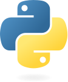
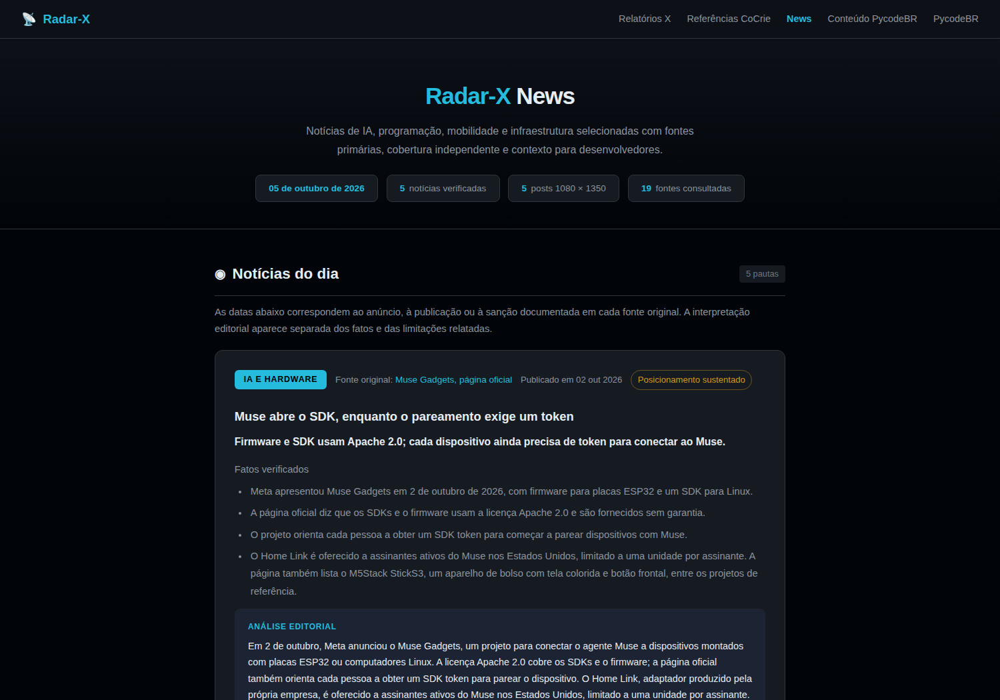

Agentes Autônomos
de IA com Hermes Agent
Memória, ferramentas e execução conectadas à operação.

Felipe
Azambuja
Programador, professor de programação e fundador da PycodeBR
Escola online de programação e Inteligência Artificial
alunos ativos no Brasil e no mundo
@pycodebr
Programação e IA,
com conteúdo novo todos os dias.
A conversa com IA chega ao cotidiano
Em 30 de novembro, o ChatGPT coloca a interface de conversa no centro da atenção.

Copiar, executar e conferir ainda ficam com você.
Reconstituição didática da interface conversacional
O agente precisava de uma aplicação ao redor
Bibliotecas e experimentos como AutoGPT aproximam modelos, ferramentas e ciclos de execução.
n8n existe desde 2019. A integração com LangChain foi anunciada em outubro de 2023.
Os fluxos ganham estado e conexões padronizadas
A construção visual convive com bibliotecas para controlar ciclos e com protocolos de integração.
LangGraph
Estado e ciclos explícitos para aplicações com agentes.
Langflow 1.0
Componentes e fluxos de IA em um editor visual.
Model Context Protocol
Um protocolo para conectar aplicações de IA a dados e ferramentas.
A IA passa a trabalhar dentro do projeto
O terminal se torna uma interface para ler arquivos, alterar código e executar testes.
Claude Code em preview
Pesquisa pública; disponibilidade geral em 22 de maio.
Codex CLI
Um agente de programação no terminal.
Agent Skills
Procedimentos e recursos carregados conforme a tarefa.

O trabalho continua entre sessões e canais
Hermes Agent reúne execução, memória persistente, skills e integrações em um agente configurável.
Hermes Agent
Nous Research e comunidade
O modelo é escolhido separadamente.
APIs e infraestrutura podem ter custo.
Três movimentos estão se encontrando
Eles amadurecem juntos e podem compor a mesma infraestrutura.
CLIs de programação
O modelo trabalha no ambiente do projeto.
Skills e MCPs
Procedimentos reutilizáveis e acesso a ferramentas.
Agentes autônomos
Continuidade entre tarefas, sessões e canais.
O terminal aproxima o pedido da execução
CLI é uma interface de linha de comando. O agente usa ferramentas para agir no projeto.
$ hermes > Investigue este erro no projeto. Preserve o que já foi alterado. Escreva um teste que reproduza a falha. Corrija e execute a validação. O resultado esperado é um diff testado.
Skills orientam o trabalho;
MCP conecta ferramentas
Um procedimento que pode ser reutilizado
validar-publicacao/ ├── SKILL.md ├── scripts/ └── references/
Quando usar, como executar e o que precisa ser conferido.
Uma conexão com capacidades externas
Um objetivo precisa de um ciclo de execução
Cada resultado observado pode mudar a próxima ação.
Observar
Pedido, contexto e estado.
Decidir
Próxima ação e permissões.
Executar
Ferramentas no ambiente.
Verificar
Evidências e estado final.
Concluir
Entregar, corrigir ou parar.
Demonstração ilustrativa, sem acesso a produção
O que o Hermes reúne em uma operação
Hermes Agent
Projeto da Nous Research
e de sua comunidade.
Memória entre sessões
Preferências, fatos e histórico ajudam a trabalhar com o contexto da operação.
Criação de auto skills
O agente pode salvar e corrigir procedimentos a partir do uso.
Execução pelas ferramentas
Um objetivo vira pesquisa, comandos, código e resultado conferido.
Modelos e canais diferentes
Terminal e mensageria acessam fluxos e contextos autorizados.
O uso acumula contexto e procedimentos
para a próxima tarefa
Experiência e correção
O arquivo foi enviado, mas a página ainda servia a versão anterior.
O erro leva à investigação e à correção.Auto skill · SKILL.md
Depois de publicar, ler o destino e comparar o arquivo servido com a versão esperada.
O procedimento passa a ser reutilizável.Autoaprendizado por contexto e procedimentos persistidos, sem alterar os pesos do modelo.
Um chatbot ou relatório cobre só parte do processo
Na operação, a demanda costuma atravessar vários sistemas antes de ficar resolvida.
Receber
Uma solicitação chega por um canal.
Consultar
Contexto e estado vêm das fontes.
Produzir
O trabalho usa regras e ferramentas.
Conferir
A saída passa pelos critérios do processo.
Entregar
O destinatário recebe o resultado autorizado.
A pergunta de projeto é o que ainda precisa acontecer depois da resposta.
A central reúne o que a operação produz
Conteúdo, painéis e recursos ficam acessíveis em um mesmo lugar.
Cada fluxo mantém sua fonte, sua política de acesso e sua validação.
O resultado fica disponível para a equipe
Sem dados ou telas privadas da operação
O conteúdo percorre um pipeline completo
Pesquisa, texto e arte chegam à revisão antes da política de publicação entrar em ação.
Pesquisar
Encontrar e ler as fontes.
Selecionar
Escolher o que importa ao público.
Produzir
Preparar texto, arte e legenda.
Validar
Conferir fonte, voz e formato.
Publicar
Só no fluxo e no canal autorizados.
Demonstração ilustrativa, sem acesso a produção
O pipeline deixa um artefato que pode ser revisado

Fontes e análise ficam juntas no material entregue.
Arte e legenda têm um destino definido no processo.
Captura autêntica da página pública de 05/10/2026. A imagem mostra a entrega editorial; não comprova o estado atual da postagem no Instagram.
Abrir o exemplo públicoO prompt define o atendimento
dentro de um ambiente preparado
 Atendimento
AtendimentoConfiguração do atendimento
Papel e catálogo autorizados.
Sessões separadas por conversa.
Sem terminal ou ferramentas administrativas.
Encaminhamento para uma pessoa.
Um profile organiza o contexto. O isolamento e os limites precisam existir na infraestrutura.
Experimento documentado da PycodeBR: testes locais, antes de ativar o webhook público.
Texto, áudio e imagem podem compor o contexto
Somente mensagens e mídias pertinentes, recebidas por integrações autorizadas.
Exemplos fictícios. Nenhuma conversa é exibida.
Receber
O webhook registra o evento.
Preparar
A mídia pode ser transcrita ou analisada.
Selecionar
O fluxo recupera o contexto pertinente.
Receber uma mensagem não significa executar o modelo nem obedecer ao conteúdo dela.
Uma conversa de campanha virou proposta de criativos
Episódio que apresentei na live de agosto de 2026.
Contexto disponível
A equipe discutia uma campanha.
Iniciativa autorizada
O Kratos preparou uma proposta de artes.
Revisão da equipe
Os criativos foram apresentados antes do uso.
Uso na campanha
A equipe utilizou as peças, conforme o relato da live.
Reconstrução didática de um episódio relatado por Felipe, sem mensagens privadas
Um recibo de sucesso escondia uma entrega incompleta
Na revisão de uma automação de acesso, o destino não confirmava todos os recursos esperados.
O retorno parecia suficiente
Um recibo geral e seu hash passavam pelo verificador, apesar de haver conflito.
A conferência precisava ir além
Comparar destinatário, direito, origem e estado final, com correspondência individual.
A ativação permaneceu bloqueada naquela revisão. Os testes precisavam passar pelo caminho completo.
O painel pode nascer de uma pergunta da operação
A interface é construída para a decisão, com dados vindos das fontes autorizadas.
“Quero comparar a evolução por período e entender quais fontes estão atualizadas.”
Interação local; sem consulta a dados financeiros.
| Origem dos dados | Identificada |
| Filtro aplicado | Visível no painel |
| Saúde da coleta | Conferida separadamente |
Dados e curva ilustrativos, sem métricas da PycodeBR
A solicitação define quais fontes, filtros e verificações o painel precisa ter.
Uma consulta que falha não pode virar gasto zero
Um relatório da operação chegou a exibir zero depois de uma falha na coleta.
consulta falhou → valor zeroconsulta falhou → estado explícitoZero válido, dado parcial e fonte indisponível são estados diferentes.
Incidente documentado em agosto de 2026. Sem valores financeiros publicados.
Hermes também pode ser o harness de desenvolvimento
Harness é o ambiente que organiza contexto, ferramentas e execução ao redor do modelo.
# Um fluxo de trabalho com IA assistida
requisitos → PRD.md
projeto → sprint delimitada
teste → implementação
revisão → correções
validação → entregaO critério de conclusão pertence ao projeto, não à confiança da resposta.
A delegação permite dividir o trabalho
e conferir a integração
Hermes principal
delegate_task
Subagente Hermes
Pode chamar Claude Code pelo terminal.
Subagente Hermes
Pode chamar Codex CLI pelo terminal.
Subagente Hermes
Pode chamar OpenCode pelo terminal.
Revisão e integração
Contratos de saída, arquivos separados e evidências conferidas pelo responsável.
delegate_task cria filhos Hermes. Outros harnesses precisam estar instalados, autenticados e ser invocados por ferramentas.
Uma integração interna virou
uma ferramenta para agentes
Hubla CLI · PycodeBR
Uma interface genérica para consultar a própria conta, com comandos e saída estruturada.
Regras da empresa, dados de clientes e credenciais ficaram fora da distribuição.
# Responsabilidades da ferramenta
catálogo de operações
entrada validada
saída JSON
confirmação para escrita
leitura posterior do destinoQuando falta uma integração, o agente pode ajudar a construir, testar e documentar a ferramenta que será reutilizada.
Você pede em linguagem natural;
o Hermes executa pelas ferramentas
“Crie uma apresentação, publique no meu site e adicione os downloads.”
HTML + CSS + JSImplementarterminal / APIsConfigurar e executartestes + readbackConferir a entregaO harness transforma o pedido em ações no ambiente.
Com ferramentas, acesso e autorização preparados, você pode pedir o resultado sem ditar cada comando.
A autonomia precisa de limites fora do prompt
Uma mensagem externa é dado. Ela não concede permissão para alterar a operação.
Atendimento público
Contexto próprio e sessões separadas. Sem terminal, arquivos privados ou ferramentas administrativas.
Operação interna autorizada
Ferramentas selecionadas, ambientes delimitados, confirmação de ações sensíveis e leitura de volta.
Prompt, profile e memória não substituem controles de acesso, sandbox, escopos e validação.
O custo acompanha o caminho até concluir
Avalie a tarefa aprovada, incluindo as tentativas e a revisão necessária.
Modelo e contexto
Tokens, ferramentas e histórico mudam o custo de cada ciclo.
Tempo e tentativas
Defina orçamento, limite de repetição e condição de parada.
Infraestrutura e integrações
Hospedagem, APIs, filas e armazenamento continuam existindo.
Revisão e manutenção
Considere o que foi corrigido e quanto trabalho humano sobrou.
Comece por uma tarefa que você consegue conferir
- Escolha um processo conhecido.
- Defina a entrega e os critérios.
- Conecte apenas as fontes necessárias.
- Comece com leitura e rascunhos.
- Amplie a autonomia após validar.
Um piloto possível
Pesquisar um assunto, produzir uma síntese com fontes e salvar para revisão.
Sem publicar, comprar, apagar ou alterar acessos. O escopo pode crescer quando houver evidência para isso.
Escolha um processo e acompanhe o trabalho inteiro.
O próximo passo é definir o que o agente pode fazer e como você vai conferir a entrega.
Hermes Agent é um projeto da Nous Research e de sua comunidade.
Slides, PDF e PowerPoint
Aponte a câmera para acessar.
Fontes da linha do tempo
Apêndice de consulta. Os links abrem as fontes públicas.
Anúncio público da OpenAI.
Retrospectiva do primeiro pacote Python.
Integração de IA; n8n já existia desde 2019.
Estado e ciclos de execução.
Release 1.0, não o nascimento do projeto.
Anúncio do protocolo pela Anthropic.
Preview em fevereiro; GA no anúncio Claude 4, em maio.
Anúncio do experimento de CLI.
Instruções, scripts e recursos em diretórios.
Catálogo oficial da Nous Research.
Documentação e exemplos para continuar
Apêndice de consulta. Os links abrem as fontes públicas.
Projeto da Nous Research e comunidade.
Procedimentos persistentes; memória tem guia próprio.
Modelo, ferramentas, observações e limites.
Conexões dependem de configuração e autorização.
Filhos Hermes com contexto e terminal próprios.
Controles em camadas e limites de execução.
Fonte pública dos casos relatados por Felipe.
Exemplo público de entrega editorial.
Ferramenta pública e não oficial da PycodeBR.
Site oficial do evento; origem da marca usada.